GSAS-II
PDF fitting with fullrmc: Ni
by
W. Adam Phelan of Los Alamos National Laboratory (LANL)
This tutorial shows use of GSAS-II and fullrmc
(FUndamental Library
Language for Reverse Monte Carlo. If you use this, please cite:
“Atomic Stochastic Modeling &
Optimization with fullrmc”, B. Aoun, J. Appl. Cryst. 2022, 55,
1664-1676. DOI: https://doi.org/10.1107/S1600576722008536
“Fullrmc,
a Rigid Body Reverse Monte Carlo Modeling Package Enabled with Machine Learning
and Artificial Intelligence”, B. Aoun, Jour. Comp. Chem. 2016, 37,
1102-1111. DOI: https://doi.org/10.1002/jcc.24304
For this tutorial, some familiarity with basic use (phase
import/creation) of GSAS-II is expected.
Note this tutorial
largely serves as the large box modelling compliment to the tutorial entitled “PDFfit-I Introduction to use of
PDFfit in GSAS-II”.
Background on fullrmc
Both RMCProfile
and fullrmc are used to fit “large box” structural
models to pair distribution function (PDF) results and the S(Q) diffraction
patterns. While RMCProfile
provides one specific way to do this, fullrmc differs
in that it implements library of functions for stochastic modeling, where
atomistic models are fit to experimental, theoretical and in some cases ad
hoc criteria in different ways. The fullrmc
framework allows a user to completely customize the fitting approach by
designing a process for performing the fit. The fullrmc
library provides computational building blocks to perform the fit. To use the
full power of fullrmc, one needs to understand the fullrmc software framework. The web site http://bachiraoun.github.io/fullrmc documents the fullrmc
scripting language and provides introductory videos. GSAS-II provides a GUI
with access to a small fraction of the capabilities in fullrmc.
GSAS-II will create a fairly simple
script incorporating an atomic model exported from GSAS-II that runs fullrmc in a fairly straightforward manner. More
experienced users may wish to use this script as a starting point to create
much more sophisticated fitting approaches.
Note that
GSAS-II requires fullrmc v5.0+, which is distributed
as separate Python executable for 64-bit versions of Windows, Mac and Linux with Intel-compatible processors (or the
Rosetta emulator on Apple Silicon). There is an older version of fullrmc (v4.x) available as open source in GitHub, but it is not compatible with the scripts GSAS-II
creates. The latest versions of fullrmc, along with a
complete GUI for all fullrmc features, is available
for cloud computing via fullrmc.com. This cloud version also provides
proprietary features such as machine learning.
For information on installing access
to fullrmc within GSAS-II, see the “Installing fullrmc” section of the fullrmc
SF6 tutorial.
Background on PDF collection: Ni
During the
2023-2 run cycle, X-ray diffraction and the corresponding pair distribution
function data were collected using a Ni-standard at beamline 28-ID-1 located at
NSLS-II on the campus of Brookhaven National Laboratory (BNL). These data
served as calibration runs for that set of general user experiments that were
conducting by W. Adam Phelan (LANL), Matthew S. Cook (LANL), and David C.
Arellano (LANL), and Milinda Abeykoon (BNL).
1. Reverse Monte Carlo Simulation of Ni
with Bond Constraints
Step 1.1. Import Phase
Start GSAS-II. Use the Import/Phase/from CIF
file menu item to read the phase information for Ni into the current
GSAS-II project from file Ni.cif.
[Alternatively, create a new phase with Space Group Fm-3m.
While GSAS-II will accept the space group without inclusion of spaces, the
correct input would separate the symmetry axes with spaces (F m-3 m). Enter the
one lattice parameter, a=3.5239 and add the one atom position: There is one Ni
atom at 0,0,0.]
Name the phase Ni and save the project as Ni.
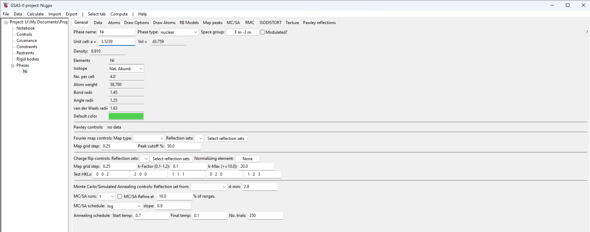
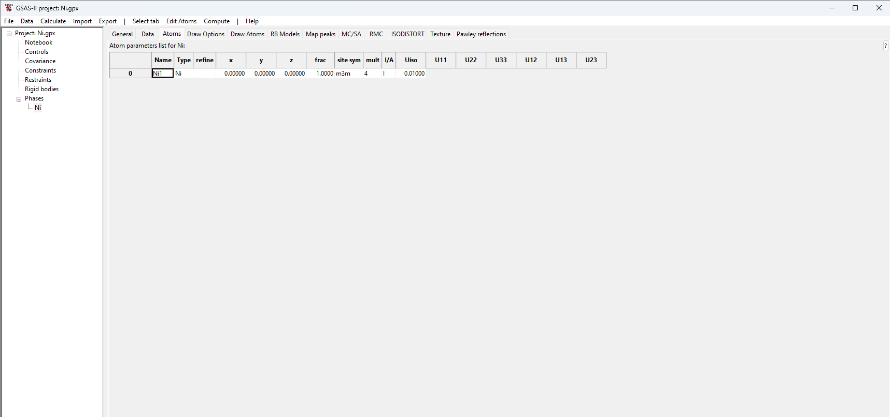
Step 1.2. Setup fullrmc
Select the “Ni”
phase tree item, if not already selected; then select the RMC tab. On this
window, select fullrmc.
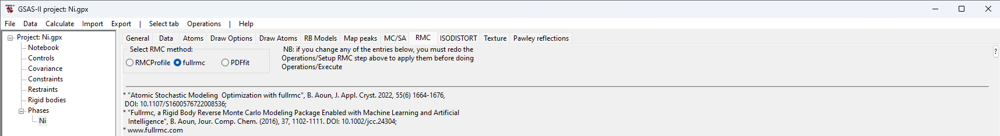
Here we will perform this fit with a quite small superlattice (so
that this fit finishes in minutes rather than the hours/days needed for a
better model) and likewise with a relatively small number of steps. We will
also use hard constraints on the Ni-Ni bond lengths to prevent fullrmc from completely disordering the structure in an attempt to find a high-entropy solution that may not
capture the true local structure of Ni. We will only provide the G(r) input to
fit against. To begin, provide the following inputs to the application menus:
· Use
a 5x5x5 supercell by setting the three lattice multipliers to 5.
· Run
100 cycles of 5,000 steps (500,000 steps total). Note that after each cycle,
statistics on state of the model are saved for plotting.
· Select
to ignore any previous fullrmc runs for this project
by selecting the “Restart fullrmc” option (this has
no effect for the first fullrmc run for a project).
·
Create distance
constraints to place hard limits on the maximum and minimum Ni-Ni distances:
o
In the first and
only column labeled “Ni-Ni” set the “min” and “to” values to 2.3 & 2.7
·
Load the PDF file:
o
Use the Xray real space,
G(r): “Select” button to read the “Ni_calib_qmax_25.gr” file.
o
Since this is a “PDFfit”-type G(r) as used in PDFfit
programs, the file type field can be left as the default choice, G(r)-PDFFIT.
When complete, the inputs
should look as below:
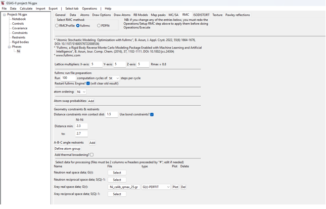
Step 1.3. Launch fullrmc
Use the Operations => “Setup RMC” menu command. This creates a
file containing a script of fullrmc commands named “Ni-Ni-fullrmc.py”,
placed in the same directory that was used for the .gpx file. Note that this file is named for both the
project (Ni) and the phase (Ni).
Then use the Operations
=> Execute menu command to start fullrmc. This
creates either a shell script (fullrmc.sh) or a Windows .bat script
(fullrmc.bat) to run fullrmc. A reminder on citations
is displayed, as below:
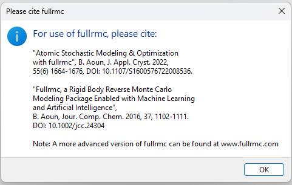
The fullrmc script is then launched in a
separate Python process with its own console window. After a brief delay, this
will start scrolling status messages:
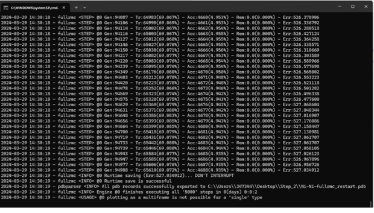
After 10 to perhaps 30 minutes depending on the speed of your
computer, the run will complete the 500,000 requested steps. The run of fullrmc is not ended, but rather the terminal window used
to run fullrmc remains open and additional fullrmc commands can be typed to create specialized plots
or perform other actions within fullrmc. To exit the fullrmc run type exit() at the >>> prompt,
as seen at the bottom of the screen image shown below.
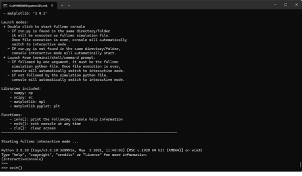
Step 1.4. Plot fullrmc
results
Note that in
the above input, we selected that fitting would be done with “5K steps/cycle”.
This means that every 5000 steps, the fullrmc output
is saved so that plots can be generated; it is not necessary to wait for the fullrmc run to complete before plotting results. Use the
Operations => Plot menu command to see this output, but notes that these
plots are not updated automatically. Repeat the Operations => Plot menu
command to update the plots. When this menu command is used, the selection
window shown below allows plots to be selected:
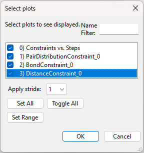
The first listed plot, “Constraints vs. Steps” shows the fullrmc cost functions as the run progresses. Note, the
unlike the SF6 tutorial, this run for Ni the
fit improves much sooner and only sees small subsequent improvement.
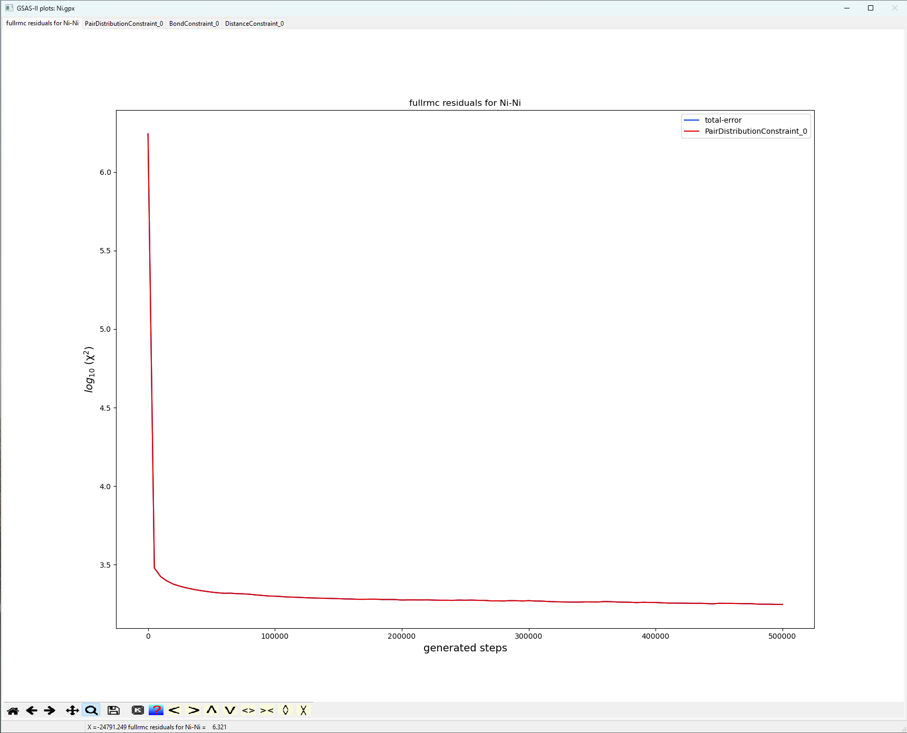
Additional plots show the quality of the fits for G(r). From the
plot below, the fit is not very good having a Standard Error of order 1767. It
appears that the origins of largest error are associated with peak broadening.
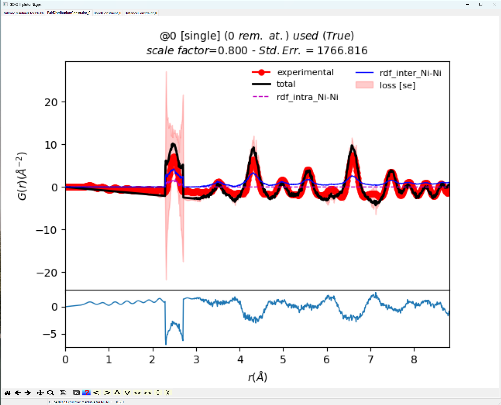
Examining the Bond
Constraint window yields two possible solutions that may result in a better
fit. First, we could expand our hard constraints beyond the 2.3-2.7 Å window that we applied
to allow for further peak broadening, or we may have to adjust the scale factor
to capture peak intensity better.
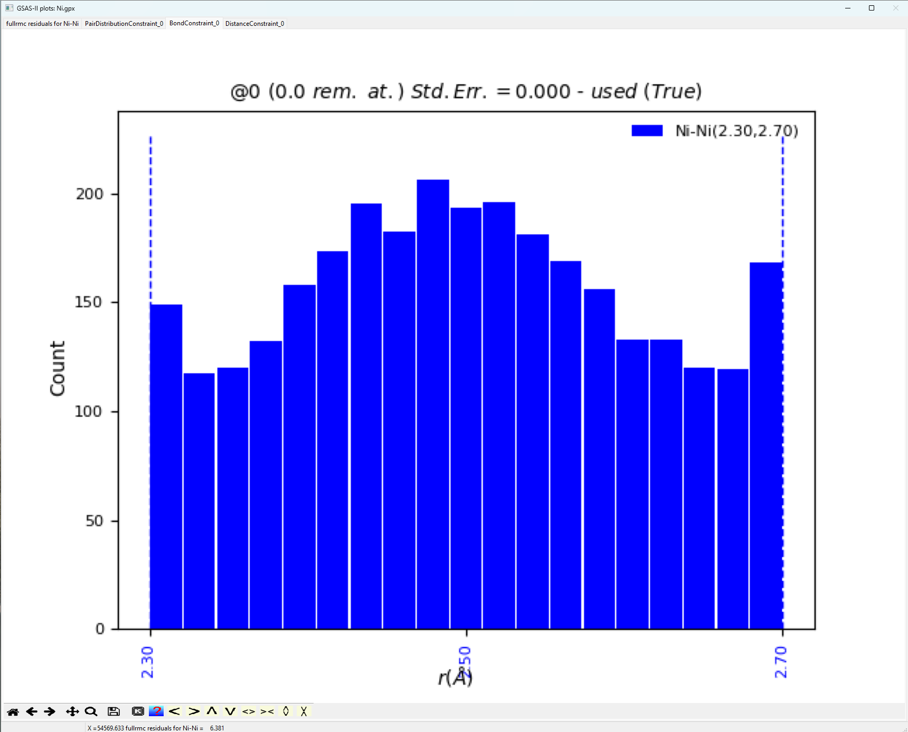
Note, that for a highly
crystalline standard, the bond distance distribution as shown above is not the
typical Gaussian expected. Next, let us view the resulting structure fit. The Operations => “Load Supercell” menu command will
input the atoms in the “big box” used for the model as a new phase. Here, this
will result in a structure with 500 atoms in a unit cell with ~17.62 Å sides. Once the fit results are loaded, a
new phase named “Ni_fullrmc” will be created. Click
on this phase to view it and then click on the “Draw Atoms” tab to transfer the
loaded atoms into the “draw array” then click on “Draw Options” to update the
structure plot. The figure below shows the structure after using the sliders to
move the “Camera Distance” to ~65 Å, the “Z-clipping” to >51 Å and the “van
der Waals scale” to about 0.02.
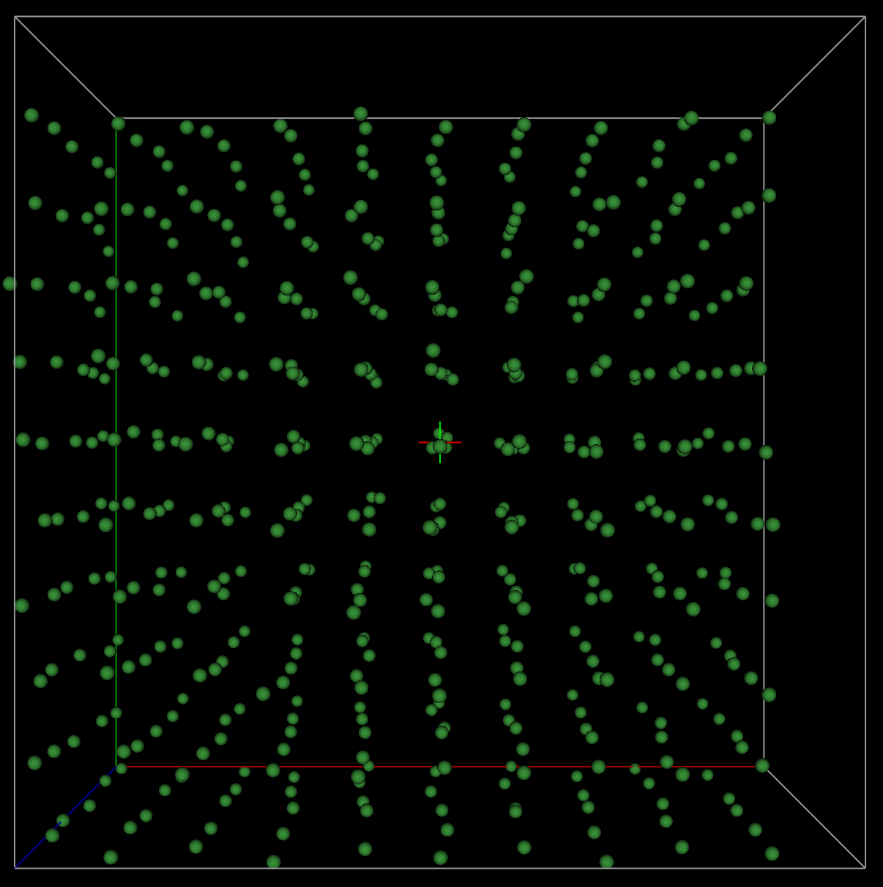
Now, let us view the
supercell or “big box” folded into the parent cell. This is sometimes referred
to as the “point-cloud rendering”. The Operations
=> “Superimpose into cell” menu command places the 500 atoms the from the
supercell into the original ~3.52 Å crystallographic cell. Since the previous
step created phase named Ni_fullrmc, this new phase
will be named Ni_fullrmc_abc so that phase names are
unique. After clicking on “Draw Atoms” and then “Draw Options,” the
“superimposed” cell appears as displayed below, again after the “van der Waals
scale” is lowered to about 0.02.
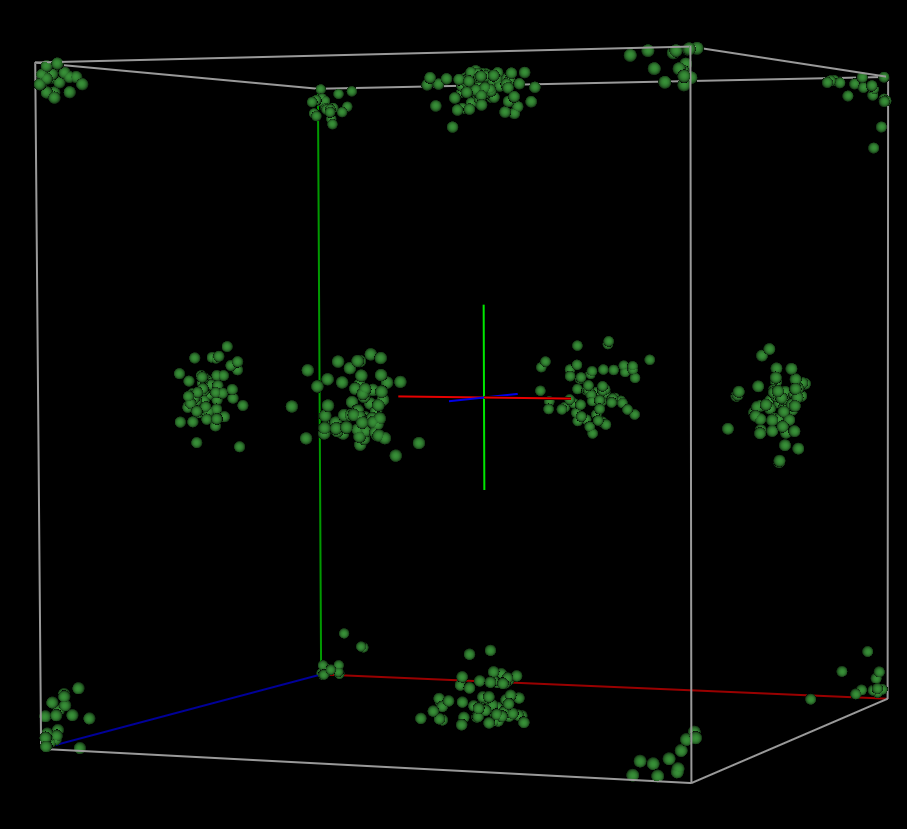
From the above plot, it
appears that the Ni atoms are quite disordered. This is not expected for a
highly crystalline standard. What we should observe are atomic regions that
appear like isotropic thermal ellipsoids. Thus, extending our hard constraint
distance window to better account for peak intensity via more peak bordering will
probably make the subsequent fits worse. In the next part of the tutorial, we
will implement commands accepted by the fullrmc
program that are not placed in the GSAS-II generated script by default in order to adjust scale factor. Collectively, this next
approach very much highlights the importance of the statements, “To use the full power of fullrmc, one needs to understand the fullrmc
software framework. The web site http://bachiraoun.github.io/fullrmc documents the fullrmc
scripting language and provides introductory videos. GSAS-II provides a GUI
with access to a small fraction of the capabilities in fullrmc.
GSAS-II will create a fairly simple
script incorporating an atomic model exported from GSAS-II that runs fullrmc in a fairly straightforward manner. More
experienced users may wish to use this script as a starting point to create
much more sophisticated fitting approaches.” presented at the beginning to the
tutorial.
2. Reverse Monte Carlo Simulation of Ni
with Bond Constraints with Refined Scale Factor
Step 2.1. Editing the
GSAS-II Script
Repeat steps and 1.1 and
1.2 as previously instructed. Now, use the Operations => “Setup RMC” menu
command. This creates a file containing a script of fullrmc
commands named “Ni-Ni-fullrmc.py”, placed in the same directory that was used
for the .gpx file. Note
that this file is named for both the project (Ni) and the phase (Ni).
Before we start fullrmc, manually open
the generated .py script in a text editor and place
the line of code “GofR.set_adjust_scale_factor((10, 0.3, 1.2))” between lines “GofR.set_limits((None,
calcRmax(ENGINE)))” and “B_CONSTRAINT = BondConstraint()”.
This inserted line of code will have fullrmc adjust
the scale factor between 0.3 to 1.1 every 10 iterations upon entering its
stochastic engine. Save the changes to the manually edited script.
Finally, use the Operations
=> Execute menu command to start fullrmc. This
creates either a shell script (fullrmc.sh) or a Windows .bat script
(fullrmc.bat) to run fullrmc. A reminder on citations
is displayed, as below:
Again, after 10 to perhaps 30 minutes depending on the speed of
your computer, the run will complete the 500,000 requested steps. Comparing the
results of the new fit to those produced in the previous lesson, we notice a
very meaningful improvement.
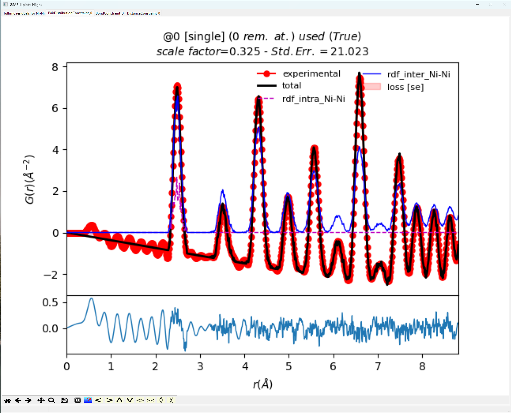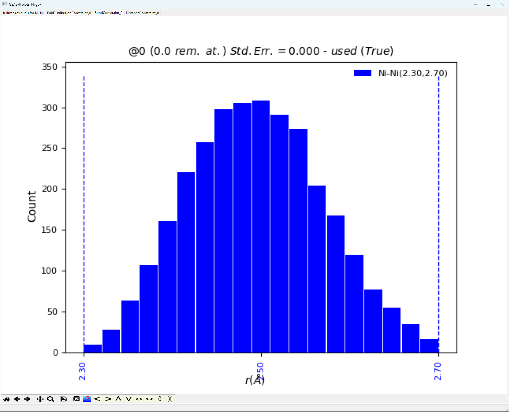
When comparing the fit
highlighted in the plot above versus the complimentary plot in “1. Reverse
Monte Carlo Simulation of Ni with Bond Constraints”, the visual fit is
significantly better. Furthermore, the Standard Error of order 21 is much
better. The bond distance window plotted below gives the expected Gaussian
distribution of bond lengths expected for a highly crystalline standard.
Finally, the point cloud rendering from the resulting fit looks much more like
the expected non-disordered, isotropic rendering for a highly crystalline
sample.
This simple tutorial highlights a very important issue
when employing Reverse Monte Carlo methods. These methods will typically “find”
the high-entropy, most disordered solution if not bound by the proper
parameters (e.g., constraints, scales, etc.). Thus, it is often important to go
beyond the simple scripts generated by GSAS-II to make full use of fullrmc libraries when trying to find meaningful solutions
in a lot of cases.
Final Note:
This tutorial was constructed such that the novice user could complete said
tutorial in two or so hours. More meaningful models to PDF data for extended
solids are usually produced when modelling data beyond ~9 Å, employing much larger starting
supercells, and running many more cycles. I was able to generate a meaningful
model for the Ni-calibrate using a 20x20x20 supercell, modelling data out to ~35
Å,
and employing 18,000,000 cycles, but this entire simulation took more than 24
hours to complete.